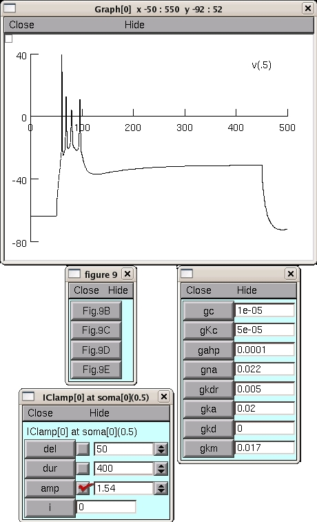

NEURON mod files from the paper: Peter Hemond, Daniel Epstein, Angela Boley, Michele Migliore, Giorgio A. Ascoli, and David B. Jaffe (2008) Distinct classes of pyramidal cells exhibit mutually exclusive firing patterns in hippocampal area CA3b. Hippocampus 18(4):411-424 In the paper, this model was used to identify how relative differences in K+ conductances, specifically KC, KM, & KD, between cells contribute to the different characteristics of the three types of firing patterns observed experimentally. The simulation ca3b-cell1zr.hoc reproduces most of the traces in Fig.9 of the paper. Under unix systems: to compile the mod files use the command nrnivmodl and run the simulation hoc file with the command nrngui ca3b-cell1zr.hoc Under Windows systems: to compile the mod files use the "mknrndll" command. A double click on the simulation file ca3b-cell1zr.hoc will open the simulation window. Under MAC OS X: Drag and drop the ca3b folder onto the mknrndll icon in the NEURON application folder. When the mod files are finished compiling drag and drop the mosinit.hoc file onto the nrngui icon. Questions on how to use this model should be directed to michele.migliore@pa.ibf.cnr.it After you start the simulation you can press on the figure buttons, for example, pressing on Fig 9B leads to:  Bug and fixes: Added the value for the I-h reversal potential (ehd_hd = -30), which was missed from the original hoc file used to generate Fig.9. Minor adjustements of the current injections were needed to obtain the same patterns. Apr-14-2008, M.Migliore